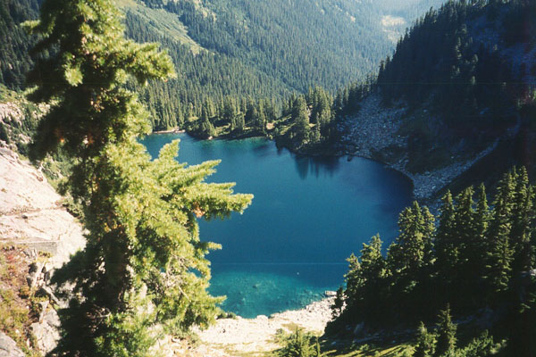
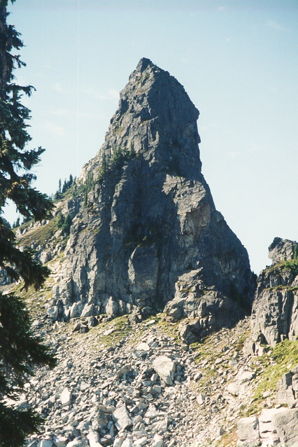
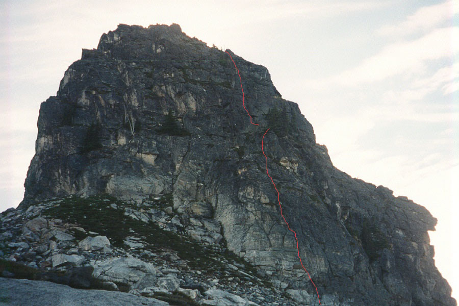
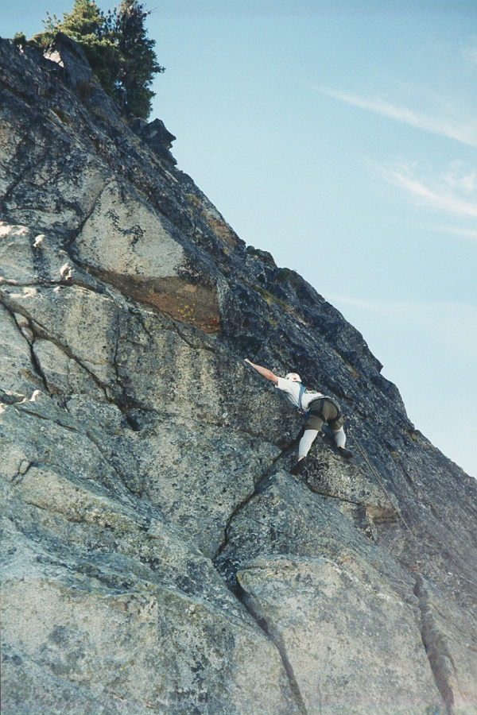
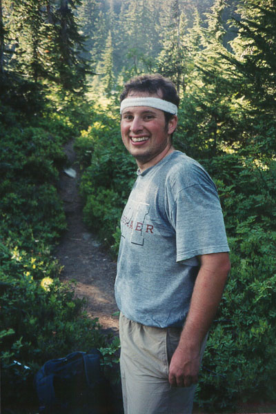
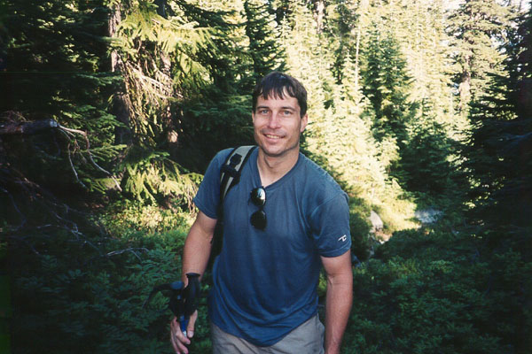

Slippery Slab Tower
Steve and Josh came up from Portland and attempted the East Face of Chair Peak. Steve ended up a rope length out searching for any kind of pro for a belay, but the face was completely blank. Only a little disappointed, they hiked around to the normal route, and climbed up and down via a chimney. This was Josh’s first technical climb, and he really enjoyed it. What to do for the next day? We didn’t want something really hard, but something that offered some climbing, and maybe a chance to see an area we hadn’t been to before. Phil F. had mentioned Slippery Slab Tower in an email a few days before, and I read about it on Gordon’s page (a lot of people involved here!). Gordon described an alternate, very scenic approach, and said that the tower looked spectacular from that vantage. This was perfect for our needs. (Gordon’s approach takes the trail near Tunnel Creek to Hope Lake, then the PCT to Trap Pass, while the usual approach follows Surprise Creek).






Josh drove us in style to the trailhead near Steven’s Pass. His car has heated seats and other amenities. These seats nearly prevented them from a winter attempt on Mt. Hood recently - the car was just too warm and dry! After a wrong turn, we found the trailhead and started hiking. The trail to Hope Lake is short but quite steep for a trail in this area. But we reached the lake quickly, and continued up to beautiful alpine terrain as we traversed a grassy slope above the Trapper Creek valley. Finally, the Tower came into view. It looked formidable. Definitely easier on the left, but still impressive. This area of the cascades has always been a mystery, and it was great to finally visit. We came to the brilliantly blue Trap Lake with it’s ring of cliffs. Shortly above Trap Pass, on a goat trail (well traveled), we stopped for a sandwich. Continuing, we soon stood at the base of the peak. The basin below the tower is extraordinarily scenic, with grassy benches, granite boulders and lingering snow-patches. We got the ropes out at the base of an obvious 3rd class gully. Steve and I scrambled up this, and gave Josh a belay. Josh had to endure many pronouncements of wisdom from Steve and I (especially Steve) about the nature of alpine climbing. Whatever he complained about at the moment would provoke some gritty wisdom along the lines that this was the central activity of alpine climbing! Some examples:
- “Don’t like bushwhacking? That’s what alpine climbing is all about!”
- “Knowing the line between acceptable and unacceptable risk - this is the central tenet of alpine travel!”
- “Long, loose, horrible descents - ah, the veritable Quan of the alpine environment…”
- “But the sine qua non of the Alpine is the unprotectable lead, don’t you know?”
Josh can rest assured he’ll be given many more tidbits of wisdom. He’ll have graduated when he learns to invent them himself!
Steve led the first real, (and only!) pitch. It was pretty exciting. It involved an open book with a crack for protection, and little smears for feet. We traversed out of the open book on the left, and up easier ground to an anchor just below the summit. We scrambled to the summit and added our names to the register. With the exception of Thunder Mountain (it looked easily scrambled), all the peaks were far. The Chiwaukum Range and Mt. Daniels provided the most spectacular vistas. Deep, green valleys radiating away from Trap Pass were just as beautiful.
We got down with single rope rappels (one double and two singles would have worked too), but wanted to do a little more climbing. During the rappels we invented the notion of the “Iron Crotch,” a sort of mid-19th century undercarriage replacement of the vitals, and the organs of elimination and reproduction. We had seen a pointy rock upon which we might fall during rappel. Only a devices like this could save us. Through a sort of historical fiction narrative, we elaborate on uses and benefits of the device, of which there was a surprising plethora. The virtues of regularity, mental clarity, order and durability were especially enhanced (at least with stainless steel models), and the device would have attracted quite a following, had it only existed.
Anyway, during this narrative, we made a believed first ascent of the clean, light-colored granite to the right of the 3rd class gully. The ascent climbed left of a flaring chimney, then entered the chimney when blocked by an overhanging slab. The chimney protected well, providing several nice hand/fist jams, until the angle relented and the climber emerges onto the face. The face gets steadily worse in quality, as the rock blackens and becomes rotten. Sparsely protected and mental (but easy) climbing leads to the slung tree that marks the regular route. The length is about 45 meters, and the rating 5.6. The climb is called “The Iron Crotch,” for obvious reasons.
After this, with plenty of time to linger in the mountains, we enjoyed a game of bouldering. Josh and I indulged in a nap, and ate many victuals while gazing out at the land. Josh discovered a water fountain underneath a boulder, and it was with warm feelings that we left our adopted basin.
The trail journey felt longer than it had in the morning, as usual, especially a long switchbacked section above Hope Lake. At the lake, Josh dealt with some painful blisters, and we thought about the virtues of lakeside camps below timberline, of which there were none. Mosquitoes, crowds, bears, lack of views. But you do have water nearby, I guess. The very steep trail down to the trailhead went quicker than expected, and at least Steve and I emerged at the car completely surprised, ready to hike another mile without complaint. When Josh arrived, he was given a capsule lesson in the comment “Endless trails in rooty forest while exhausted make up one of the prime demands placed on the would-be alpine climber.” Down to pizza at Frankie’s in Redmond went the three would-be alpinists.
Thanks to Josh and Steve!